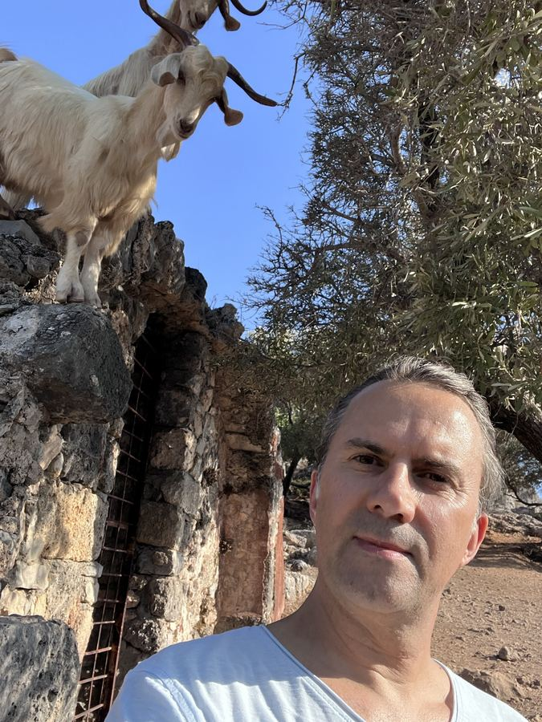

Über Lykien
Das Land der Lykier
Lykien ist die gebirgige Halbinsel an der Südwestküste der Türkei zwischen Fethiye und Antalya. Das Taurusgebirge fällt hier steil ins Mittelmeer ab; nur wenige Kilometer hinter den Buchten ragen Gipfel über 3.000 Meter auf. Dazwischen liegen Kiefernwälder, Terrassenfelder, Bergdörfer – und auf Schritt und Tritt die Spuren einer alten Kultur.


Ein Volk mit eigener Sprache und eigenem Bund
Die Lykier waren ein eigenständiges Volk mit einer eigenen, mit dem Luwischen verwandten Sprache und Schrift. Schon Homer nennt sie in der Ilias als Verbündete Trojas. Um 546 v. Chr. eroberten die Perser das Land; die Bewohner von Xanthos sollen nach Herodot lieber ihre Stadt in Brand gesetzt und den Tod gesucht haben, als sich zu ergeben. Es folgten Alexander der Große, die Nachfolgereiche und Rhodos. Im 2. Jahrhundert v. Chr. schlossen sich die Städte zum Lykischen Bund zusammen – einem der ersten bekannten Bundesstaaten mit gewählten Vertretern, deren Stimmen sich nach der Größe der Städte richteten. Die sechs größten, Xanthos, Patara, Pinara, Tlos, Myra und Olympos, hatten je drei Stimmen. Montesquieu lobte dieses Modell, und auch die Väter der amerikanischen Verfassung beriefen sich darauf. 43 n. Chr. wurde Lykien römische Provinz.

.jpg){kind=link}
Orte am Weg
Was die Lykier hinterlassen haben, sieht man überall: in den Fels gehauene Grabfassaden wie in Fethiye, dem antiken Telmessos, Sarkophage mit spitzbogigem Deckel mitten in Dörfern und Häfen, Theater, Thermen und Stadtmauern. Patara war Hafen und Versammlungsort des Lykischen Bundes und ist der Geburtsort des heiligen Nikolaus, der später Bischof von Myra wurde. Xanthos und das Heiligtum Letoon gehören zum UNESCO-Welterbe. In der Bucht von Kekova liegen Teile von Simena und Aperlai unter Wasser, und Kaş steht auf den Resten des antiken Antiphellos.
Kate Clow und der Lykische Weg

Dass man all das heute zu Fuß verbinden kann, ist der britischen Autorin und Hobbyhistorikerin Kate Clow zu verdanken. Sie kam 1989 in die Türkei, ließ sich in Antalya nieder und begann, alte Römer-, Hirten- und Maultierpfade zu erkunden und sich in den Dörfern nach den früheren Verbindungswegen zu erkundigen. Daraus entstand der Lykische Weg (Likya Yolu), der erste markierte Fernwanderweg der Türkei. Mit Freiwilligen und unterstützt von einer türkischen Bank markierte sie die Route mit den rot-weißen Zeichen, die uns unterwegs begleiten, eröffnete sie 1999 und schrieb den Wanderführer dazu. Ursprünglich gut 500 Kilometer lang, von Ovacık bei Fethiye bis Geyikbayırı bei Antalya, ist der Weg mit späteren Ergänzungen auf rund 760 Kilometer gewachsen. In vielen Dörfern sind seitdem kleine Pensionen entstanden.
Kate Clow hat später weitere Wege angelegt, etwa den Paulusweg (St. Paul Trail), und 2012 den Verein Kültür Rotaları Derneği (Culture Routes Society) gegründet, der sich heute um viele Kulturwanderwege in der Türkei kümmert.
Wir gehen den Lykischen Weg in Etappen: 2025 von Fethiye bis zum Leuchtturm Yediburunlar, 2026 von Bezirgan und Patara bis Kaş.
24. September bis 1. Oktober 2025
Etappe 1: Von Fethiye zum Leuchtturm Yediburunlar
Unsere erste Lykien-Wanderung im September 2025: Ankunft in Ölüdeniz, eine Bootstour zur Gemiler Adası und vier Wandertage von Fethiye über Kayaköy und Faralya bis zum Leuchtturm Yediburunlar – mit einem 30. Hochzeitstag unterwegs.

Anreise
Ankunft in Ölüdeniz

Ölüdeniz
Ein Tag an der Lagune von Ölüdeniz – und ein Umknicker beim Joggen

Bootstour
Bootstour zur Gemiler Adası

Wandertag 1
Felsengräber, ein verlassenes Dorf und der Weg nach Ölüdeniz
6,13 km286 m ↑

Wandertag 2
Hoch über Ölüdeniz und Mittagessen in Kozağaç
10,37 km532 m ↑

Wandertag 3
Regen über dem Schmetterlingstal – und ein 30. Hochzeitstag
10,88 km373 m ↑

Wandertag 4
Vom alten Baum zum Leuchtturm von Yediburunlar
6,09 km336 m ↑

Rückblick
Rückreise und Rückblick
23. bis 30. Oktober 2026
Etappe 2: Von Patara über Aperlai nach Kaş
Nach holprigem Start drei Wandertage zwischen Bezirgan, Patara, Apollonia, Aperlai und Limanağzı, dazu ein Bootsausflug durch Kekova – danach Regentage in Kaş und ein Kunstabschluss in Fethiye.

Anreise
Anreise mit Hindernissen

Tag 1 der Tour
Der verpasste erste Tag

Wandertag 1
Die Getreidespeicher von Bezirgan und das antike Patara
9,54 km292 m ↑

Wandertag 2
Von Apollonia hinunter nach Aperlai – und mit dem Boot durch Kekova
7,01 km41 m ↑

Wandertag 3
Über den Çoban Plajı nach Limanağzı – und weiter nach Kaş
8,85 km265 m ↑

Kaş
Regen statt Bootstour

Fethiye
Kunst zum Abschluss in Fethiye

Rückblick